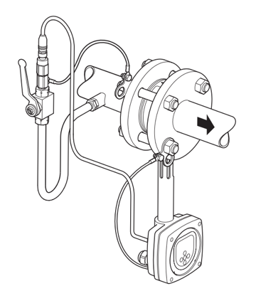
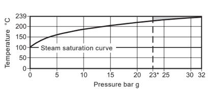
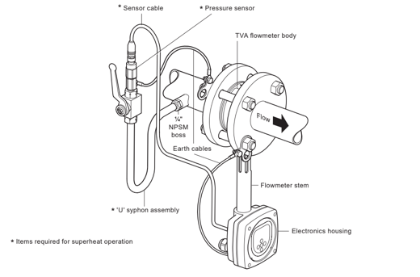
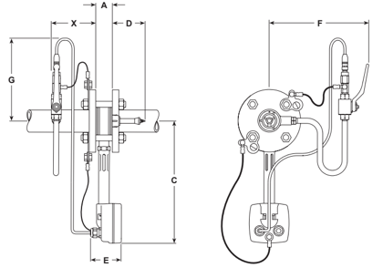

TI-P192-01
MI Issue 4
TVA Flowmeter for Saturated and Superheated Steam Service
Description
The Spirax Sarco TVA flowmeter is designed for use on saturated and superheated steam (with the dedicated pressure sensor kit) and operates on the target principle, by measuring the force produced on a moving cone by the fluid flow. This force is then converted into density compensated mass flowrate and is transmitted via a single loop powered 4–20 mA and pulsed output. TVA flowmeters also incorporate a totalised flow function and EIA 232C (RS 232) or EIA 485C (RS485) Modbus communications.
Sizes and pipe connections
DN50, DN80 and DN100.
The TVA flowmeter is of wafer design, suitable for fitting between the following flanges:
- EN 1092 PN16, PN25 and PN40
- BS 10 Table H
- ASME B 16.5 Class 150 and Class 300
- Japanese Industrial Standard JIS 20
- Korean Standard KS 20
Note: Spirax Sarco TVA flowmeters should be installed in pipework manufactured to BS 1600, ASME B 36.10 Schedule 40 or EN 10216-2 / EN 10216-5 equivalent. For systems with different standards or schedules, please contact Spirax Sarco.

Pressure/temperature limits

| Maximum design pressure | 32 bar g at 239°C |
|---|---|
| Maximum design temperature | 239°C |
| Minimum design temperature | 0°C (non-freezing) |
| Maximum operating pressure — horizontal, superheated steam | 23 bar g at 239°C |
| Maximum operating pressure — horizontal, saturated steam | 32 bar g at 239°C |
| Maximum operating pressure — vertical, saturated steam only | 7 bar g at 170°C |
| Minimum operating pressure | 0.6 bar g |
| Maximum operating temperature (saturation) | 239°C |
| Minimum operating temperature | 0°C (non-freezing) |
| Maximum electronics ambient temperature | 55°C |
| Maximum electronics humidity level | 90% RH (non-condensing) |
| Maximum cold hydraulic test pressure | 52 bar g |
High pressure syphon tube assembly
| Maximum design pressure | 80 bar g |
|---|---|
| Maximum design temperature | 450°C |
| Maximum working conditions | 60 bar g at 450°C |
Pressure sensing kit
| Maximum operating temperature | 125°C |
|---|---|
| Minimum operating temperature | 0°C (non-freezing) |
| Maximum operating pressure | 50 bar g |
| Maximum ambient temperature (cable and connector) | 70°C |
Materials

| Unit | Part | Material |
|---|---|---|
| TVA | Flowmeter body | Stainless steel S.316, 1.4408 CF8M |
| Internals | 431 S29 / S303 / S304 / S316 | |
| Spring | Inconel X750 or equivalent | |
| Flowmeter stem | Stainless steel 300 series | |
| Electronics housing | Aluminium LM25 | |
| Pressure sensing kit | Cable | Polyvinyl chloride (PVC) |
| Sensor housing | AISI 304 stainless steel 1.4301 | |
| Sensor | AISI 630 stainless steel 1.4542 | |
| O-ring | Nitrile Butadiene Rubber (NBR) | |
| Adaptor | AISI 431 stainless steel 1.4057 | |
| High pressure syphon tube assembly | Tube | Carbon steel BS 3602: Part 1 1987 CFS 360 (zinc plated/passivated) |
| Valve body | Carbon steel | |
| Valve seat | PEEK / Polymain |
Technical data
| IP rating | IP65 with correct cable glands |
|---|---|
| Power supply | Loop powered; with optional RS485: 24 VDC |
| Outputs | 4–20 mA (not available with RS485 option); pulsed output (Vmax 28 Vdc, Rmin 10 kΩ) |
| Communication port | Modbus EIA 232C (RS 232C); with optional RS485: EIA 485 (RS 485C) |
Dimensions/weights
Note: Dimension X is a recommended minimum distance between the pressure tapping and the flowmeter. It may be installed at any distance provided the cable allows. Standard cable length is 1 m.

| Size | A | Flowmeter OD | C | D | E | F | G | X | TVA weight | Superheat kit | U syphon |
|---|---|---|---|---|---|---|---|---|---|---|---|
| DN50 | 35 | 103 | 322 | 125 | 65 | 250 | 160 | 300 | 2.67 | 0.3 | 0.5 |
| DN80 | 45 | 138 | 334 | 115 | 65 | 270 | 160 | 300 | 4.38 | 0.3 | 0.5 |
| DN100 | 60 | 162 | 344 | 155 | 65 | 280 | 160 | 300 | 7.28 | 0.3 | 0.5 |
Dimensions are approximate in mm and weights are approximate in kg.
Performance
The TVA flowmeter has inbuilt electronics which give a density compensated output. An LCD display is incorporated within the electronics head. The M750 display unit can provide a remote display function, using the 4–20 mA output.
System uncertainty, to 95% confidence (2 STD), in accordance with ISO 17025:
- ±2% of measured value from 10% to 100% of maximum rated flow.
- ±0.2% FSD from 2% to 10% of maximum rated flow.
- Turndown: up to 50:1.
As the TVA flowmeter is a self-contained unit, the uncertainty quoted is for the complete system. For technologies quoting pipeline-unit uncertainty, associated equipment such as DP cells must also be included to determine true system uncertainty.
Pressure drop
The pressure drop across the TVA is nominally 750 mbar (300 in water gauge) at maximum rated flow for DN50, and 500 mbar (200 in water gauge) for DN80 and DN100.
| Flowmeter type | QE maximum (litres/min) | QE minimum (litres/min) | Maximum DP (in wg) | Maximum DP (mbar) |
|---|---|---|---|---|
| DN50 | 300 | 3 | 300 | 750 |
| DN80 | 770 | 8 | 200 | 498 |
| DN100 | 1,200 | 12 | 200 | 498 |
Sizing for saturated steam
Maximum flowrates in kg/h at different pressures (bar g), for horizontal orientation.
- Maximum steam flowrates are calculated at maximum differential pressure.
- The table is a guide only.
- For superheated capacities, use the sizing software at www.spiraxsarco.com.
| Size | Flow | 1 | 3 | 5 | 7 | 10 | 12 | 15 | 20 | 25 | 30 | 32 bar g |
|---|---|---|---|---|---|---|---|---|---|---|---|---|
| DN50, QE 300 | Max. | 619 | 859 | 1,042 | 1,196 | 1,395 | 1,513 | 1,676 | 1,918 | 2,135 | 2,335 | 2,409 |
| Min. | 12 | 17 | 21 | 24 | 28 | 30 | 33 | 38 | 43 | 47 | 60 | |
| DN80, QE 770 | Max. | 1,588 | 2,204 | 2,674 | 3,070 | 3,581 | 3,885 | 4,301 | 4,922 | 5,480 | 5,994 | 6,183 |
| Min. | 32 | 44 | 53 | 61 | 72 | 78 | 86 | 98 | 110 | 120 | 128 | |
| DN100, QE 1,200 | Max. | 2,475 | 3,435 | 4,167 | 4,784 | 5,581 | 6,054 | 6,703 | 7,671 | 8,540 | 9,341 | 9,637 |
| Min. | 49 | 69 | 83 | 96 | 112 | 121 | 134 | 153 | 171 | 187 | 192 |
Safety information, installation and maintenance
For full details see the Installation and Maintenance Instructions (IM-P192-02) supplied with the product. The following main points are given for guidance only:
- Mount the TVA with at least 6 straight pipe diameters upstream and 3 downstream, with no valves, fittings or cross-sectional changes in those lengths. Allow 12 upstream diameters after an increase in nominal pipe diameter, two 90° bends in two planes, a pressure reducing valve or a partly open valve.
- Ensure the internal upstream and downstream pipe diameters are smooth. Ideally use seamless pipe with no intrusive internal weld beads; slip-on flanges are recommended.
- Install the TVA concentrically in the line to avoid flow measurement errors.
- The TVA may be installed in any orientation up to 7 bar g for saturated conditions. For superheated conditions it may only be installed in horizontal pipework with the electronics below the pipeline.
- Follow good steam engineering practice: provide correct line drainage and trapping, align and support pipework, use eccentric reducers for size changes, and do not insulate the TVA body or mating flanges.
- Do not install the TVA outdoors where it may be exposed to driving rain or freezing.
How to order
Saturated service example: One Spirax Sarco DN100 TVA flowmeter for installation between EN 1092 PN40 flanges, for saturated steam at 10 bar g, maximum flow 5,581 kg/h.
Superheated service example: One Spirax Sarco DN100 TVA flowmeter, pressure sensing kit and U syphon, for installation between EN 1092 PN40 flanges, for superheated steam at 10 bar g.
Note: For details of the optional remote display, see the relevant Spirax Sarco M750 literature.
Spare parts and accessories
- Spare electronics front panel with standard RS 232C communications.
- Spare electronics front panel with RS485 communications converter.